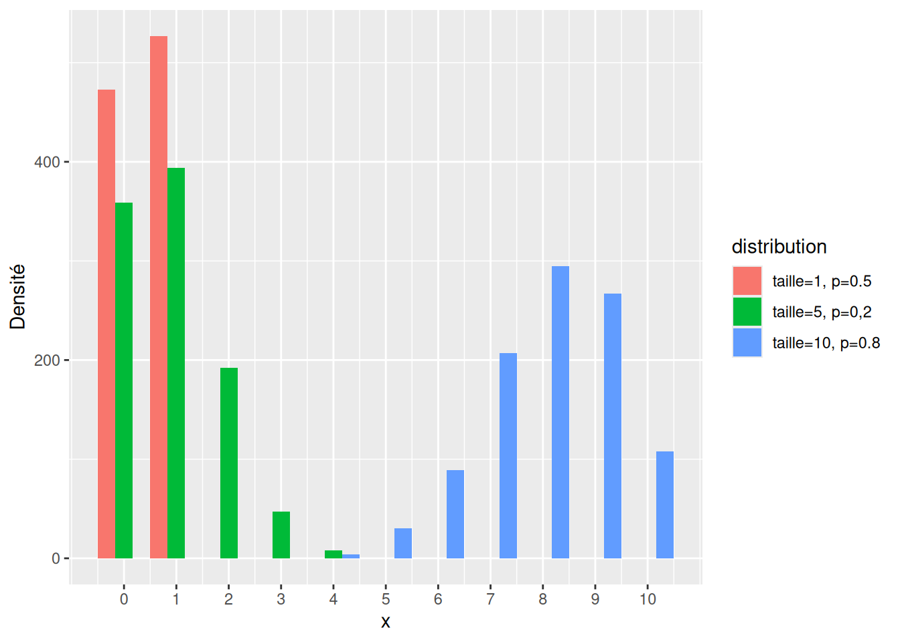
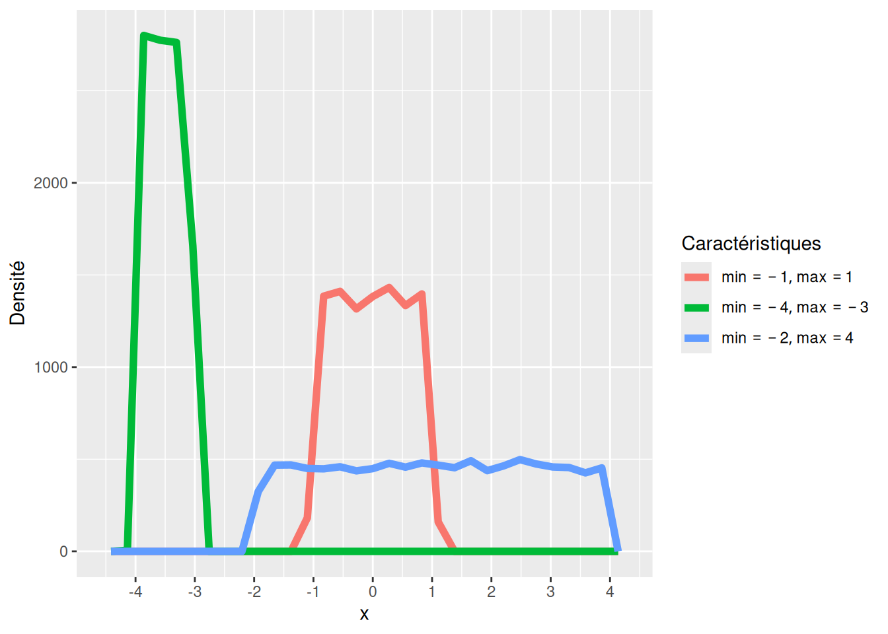

# Parmi les entiers compris entre 1 et 10, tirer aléatoirement 5 nombres
sample(x = 1:10, size = 5)[1] 1 10 4 7 8L3 économie-finance
R a de nombreuses fonctions qui permettent de faire des tirages aléatoires. Il connaît aussi beaucoup de distributions de probabilités “classiques” et il est donc possible d’échantillonner à partir de celle-ci.
Ce cours a été construit à l’aide du chapitre 5.3 de Phillips (2018). Les exercices swirl à partir de la leçon simulation de swirldev (2022).
sample()La fonction sample() permet d’échantillonner à partir d’un vecteur connu :
# Parmi les entiers compris entre 1 et 10, tirer aléatoirement 5 nombres
sample(x = 1:10, size = 5)[1] 1 10 4 7 8| Argument | Définition |
|---|---|
x |
Le vecteur que l’on souhaite échantillonner. Par exemple, pour simuler des tirages à pile ou face : x = c("P", "F") |
size |
La taille de l’échantillon. La valeur par défaut est la longueur de x. |
replace |
Est-ce que le tirage se fait avec remise ? Si FALSE, alors une valeur ne peut être tirée qu’une seule fois. Si TRUE, chaque valeur peut être tirée plusieurs fois. |
prob |
Un vecteur de probabilités de la même longueur que x qui indique la probabilité de chaque valeur dans x. Si l’argument n’est pas spécifié, chaque valeur à la même probabilité. Si la somme n’est pas 1, R va normalisé le vecteur pour que la somme soit 1. |
Avec une pièce non-biaisée
sample(x = c("F", "P"), # les valeurs possibles de la pièce
size = 10, # 10 tirages
replace = TRUE) # Échantillonnage avec remise [1] "F" "F" "P" "P" "F" "P" "F" "F" "P" "F"Notre pièce peut retomber sur la tranche, mais avec une faible probabilité
sample(x = c("F", "P", "T"),
prob = c(.48, .48, 0.04), # Pièce avec des tranches épaisses
size = 50,
replace = TRUE) [1] "P" "F" "F" "F" "P" "P" "P" "F" "F" "P" "F" "T" "P" "P" "F" "P" "F" "F" "F"
[20] "P" "T" "F" "P" "P" "P" "F" "F" "F" "F" "P" "P" "P" "F" "P" "T" "F" "F" "F"
[39] "F" "F" "P" "F" "P" "F" "F" "P" "P" "P" "F" "P"Le résultat d’un tirage aléatoire est toujours différent ! En reprenant le tirage précédent :
sample(x = c("F", "P"), # les valeurs possibles de la pièce
size = 10, # 10 tirages
replace = TRUE) # Échantillonnage avec remise [1] "P" "F" "P" "F" "F" "P" "P" "F" "P" "P"sample(x = c("F", "P"), # les valeurs possibles de la pièce
size = 10, # 10 tirages
replace = TRUE) # Échantillonnage avec remise [1] "P" "F" "P" "F" "F" "F" "P" "P" "F" "P"Il y a des situations où vous souhaitez exercer un contrôle sur la procédure de tirage. Par exemple pour pouvoir reproduire exactement le même code. On utilise alors la fonction set.seed() et on lui donne un nombre.
set.seed(0)
sample(x = c("F", "P"), # les valeurs possibles de la pièce
size = 10, # 10 tirages
replace = TRUE) # Échantillonnage avec remise [1] "P" "F" "P" "F" "F" "P" "F" "F" "F" "P"set.seed(0)
sample(x = c("F", "P"), # les valeurs possibles de la pièce
size = 10, # 10 tirages
replace = TRUE) # Échantillonnage avec remise [1] "P" "F" "P" "F" "F" "P" "F" "F" "F" "P"Les deux tirages sont exactement identiques !
R connaît toutes les distributions de probabilités classiques, telle que la loi normale ou la loi uniforme.
On utilise rnorm() pour tirer depuis une loi normale.

# 5 tirages depuis une loi Gaussienne
rnorm(n = 5, mean = 0, sd = 1)[1] 0.5673637 -0.2140512 -0.4588069 1.9281552 1.3590606# 3 tirage d'une loi normale de moyenne -10 et d'écart-type 15
rnorm(n = 3, mean = -10, sd = 15)[1] -3.345111 -28.829361 -9.734962| Argument | Définition |
|---|---|
n |
Le nombre de tirage à faire depuis la distribution |
mean |
La moyenne de la distribution. |
sd |
L’écart type de la distribution. |
On utilise rbinom() pour tirer depuis une loi binomiale.

# Répétition de 5 tirages à pile ou face
rbinom(n = 5, size = 1, prob = 0.5)[1] 0 0 0 0 1# Répétition de 10 tirages à pile ou face avec une pièce biaisée
rbinom(n = 10, size = 1, prob = 0.6) [1] 0 0 1 0 1 0 0 0 0 1| Argument | Définition |
|---|---|
n |
Le nombre de tirages |
size |
Le nombre d’essai possibles |
prob |
La probabilité de succès sur un tirage |
`stat_bin()` using `bins = 30`. Pick better value with `binwidth`.
La loi uniforme utilise la même probabilité pour toutes les valeurs dans un intervalle.
# 5 tirages uniformes entre 0 et 1
runif(n = 5, min = 0, max = 1)[1] 0.1665025 0.9357397 0.5146023 0.6649318 0.8899657# 10 tirages uniformes entre -100 et 100
runif(n = 10, min = -100, max = 100) [1] 6.227325 -9.246520 -23.410902 -30.509829 -17.776026 57.768386
[7] 48.605395 68.676781 57.427986 50.841132| Argument | Définition |
|---|---|
n |
Le nombre de tirages |
min |
Le minimum de la distribution uniforme |
max |
Le maximum de la distribution uniforme |